Implicit Differentiation#
Introduction
For each of the following problems:
Find
 by solving the equation for
by solving the equation for  and differentiating directly.
and differentiating directly.Find
by implicit differentiation.Check the derivatives obtained through both methods are the same.


Applications
Use implicit differentiation to solve the following problems:

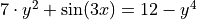

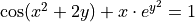

A Pointless Problem
Important
Take time to appreciate the pun here. If you don’t get it yet, you will.
Consider the function  ,
,
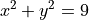
Plot this function in the x-y plane. (Desmos is good for this). What kind of graph is this?
Important
Do you get it now?!
Use implicit differentiation to find
 . Express the answer as a function of
. Express the answer as a function of  only.
only.Find the equation of the tangent line at the points

Plot the tangent lines on top of the graph you created in part a.
Find the points
 where the tangent lines found in part c intersect.
where the tangent lines found in part c intersect.Plot the points found in part e on top of the graphs you created in part a and part d.
What is the area of the quadrilateral formed by the tangent lines in part c?
Natural Log Derivative
The formula for the derivative of the natural log,  , can be derived with implicit differentiation. To do so, recall the differentiaion rule for exponential functions,
, can be derived with implicit differentiation. To do so, recall the differentiaion rule for exponential functions,
Exponential Derivative
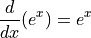
Then define y as,

Use implicit differentiation to derive the formula for,
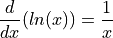
Hint
Solve for and then apply the Chain Rule.
Inverse Trigonometric Derivatives
In class we used implicit differentiation to derive,

Using a similar process, find the derivatives of the following inverse trigonometric functions,
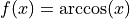
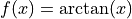
Hint
Remember to draw a diagram of the unit circle. Express x and y in terms of lengths and angles!
2005, Free Response Form B, #5
Consider the curve given by,

Show that
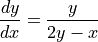
Find all points
on the curve where the line tangent to the curve has slope  .
.Show that there are no points
on the curve where the line tangent to the curve is horizontal.
d. Let x and y be functions of time t that are related by the equation 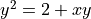 . At time 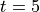, the value
of is 3 and 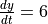. Find the value of  at time .
at time .
2023, Free Response, #6
Consider the curve given by the equation,
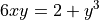
Show that,

Find the coordinates of a point on the curve at which the line tangent to the curve is horizontal, or explain why no such point exists.
Find the coordinates of a point on the curve at which the line tangent to the curve is vertical, or explain why no such point exists.
A particle is moving along the curve. At the instance when the particle is at the point 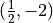, its horizontal position is increasing at a rate of 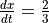 units per second. What is the value of
 , the rate of change of the particle’s vertical position, at that instant?
, the rate of change of the particle’s vertical position, at that instant?
2015, Free Response, #6
Consider the curve given by the equation  . It can be shown that
. It can be shown that  .
.
Write an equation for the line tangent to the curve at the point
 .
.Find the coordinates of all points on the curve at which the line tangent to the curve at that point is vertical.
Evaluate
 at the point on the curve where
at the point on the curve where  and
and  .
.